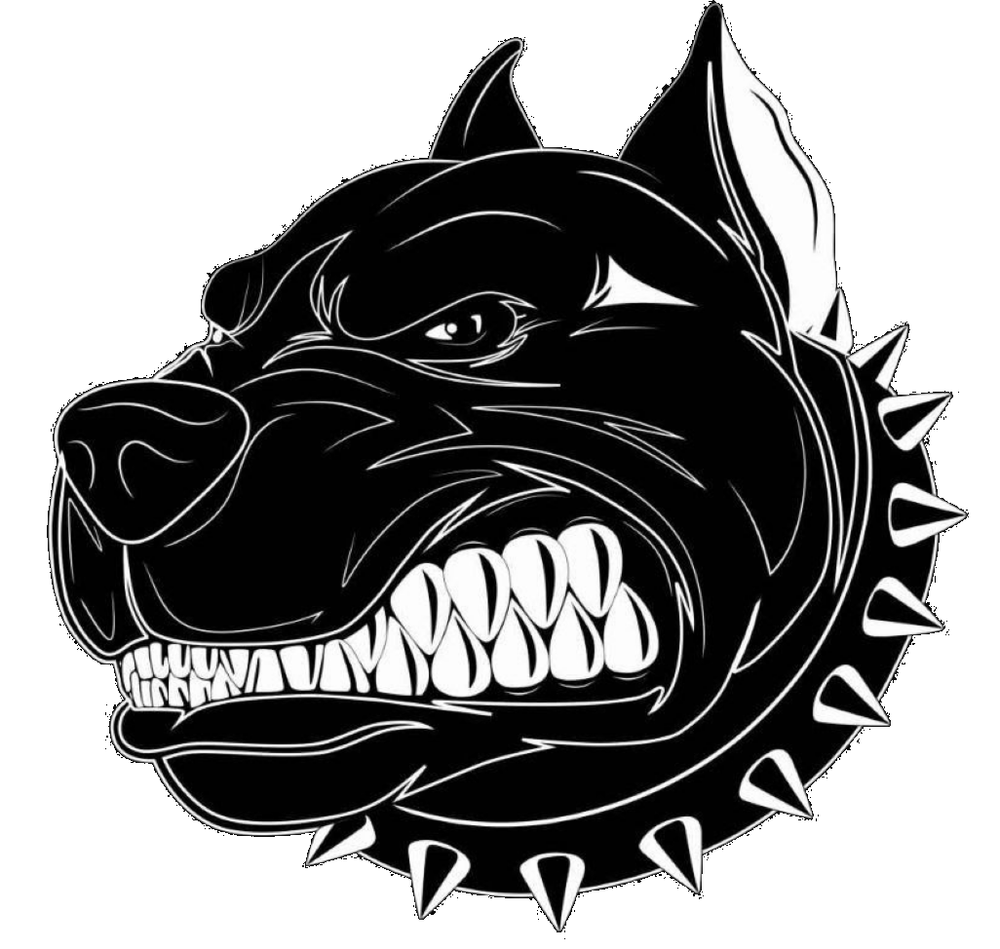
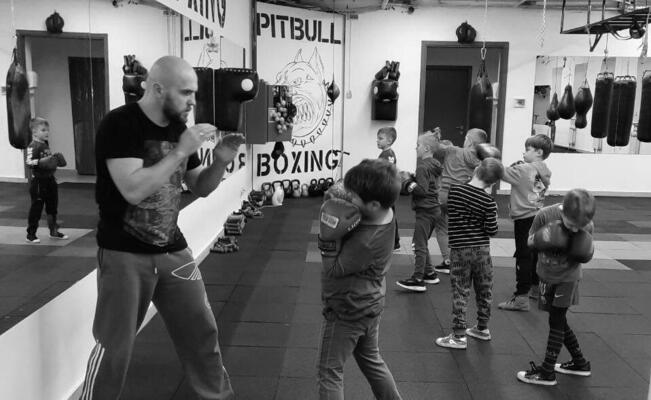
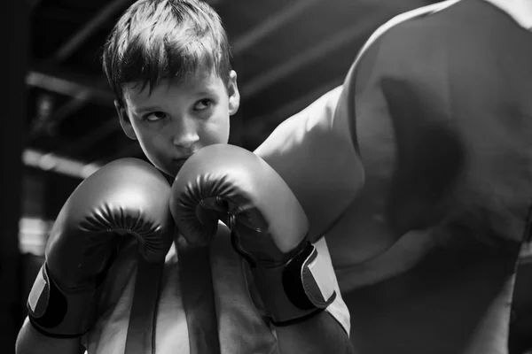
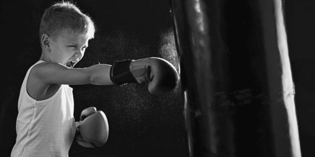
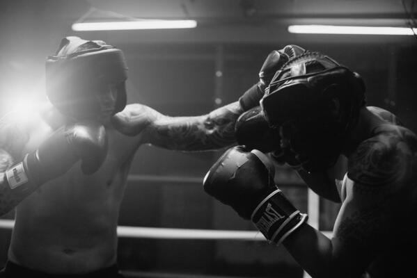
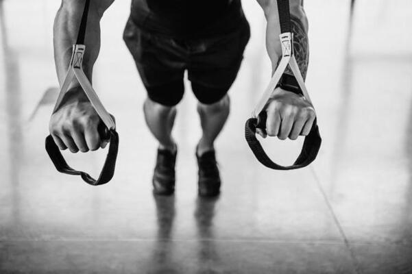
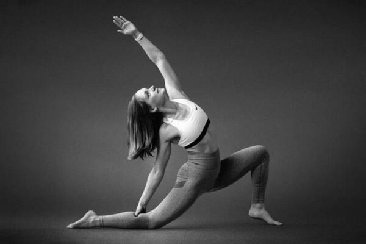
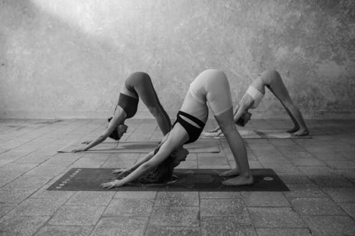
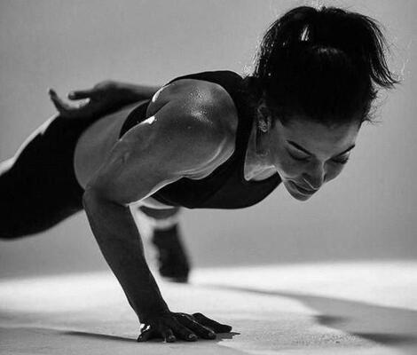
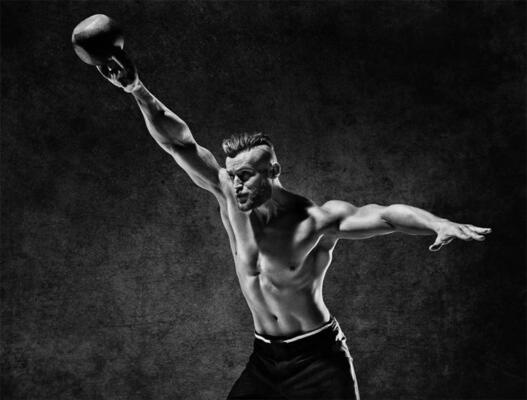

PitBull

Boxing
"Pitbull Boxing" - це сучасний спортивний заклад, який пропонує відмінні можливості для тренування та розвитку у боксі. Ця секція відома своєю високою якістю тренувань та великим зацікавленням у підготовці спортсменів різних рівнів від початківців до професіоналів.
Основні переваги:
"Pitbull Boxing" - це місце, де кожен може знайти свій шлях у світ боксу, незалежно від свого рівня підготовки чи цілей. Тут спортсмени розвивають не лише фізичні навички, але і дисципліну та вольову силу, що допомагає їм досягати успіху не лише у спорті, а й у житті.

Якщо ви батьки активної та енергійної дитини, відкрийте для неї світ спорту! Тренери секції боксу «PitBull Boxing» працюють навіть з наймолодшими спортсменами віком 5-8 років, розвиваючи фізичні та психологічні навички, що стануть у пригоді як зараз, так і в майбутньому. Ми гарантуємо безпечну атмосферу для тренувань, де ваша дитина зможе виплеснути енергію, опановуючи ази боксу під керівництвом досвідчених наставників.
Понеділок
10:30, 17:00Вівторок
17:00Середа
10:30, 17:00Четвер
17:00П'ятниця
10:30, 17:00Субота
11:00
Бокс – це не лише захопливий спорт, а й чудова можливість для вашої дитини відкрити свій потенціал! Тренування в «PitBull Boxing» для дітей 9-11 років спрямовані на розвиток фізичної підготовки та формування характеру. Ми працюємо з дітьми, щоб допомогти їм знайти впевненість у собі, навчитися дисципліни та розвинути основні навички самооборони.
Заняття проводяться у веселій та підтримуючій атмосфері, де діти можуть:
Понеділок
17:00Вівторок
17:00Середа
17:00Четвер
17:00П'ятниця
17:00
Для підлітків 12-16 років бокс стає не лише спортом, а й потужним інструментом для самовдосконалення. У цьому віці важливо не лише розвивати фізичну силу, а й працювати над дисципліною, самоконтролем та стресостійкістю. Тренування в «PitBull Boxing» створені саме для цього.
Наші заняття включають:
У результаті ваш підліток зможе:
Понеділок
18:00Вівторок
18:00Середа
18:00Четвер
18:00П'ятниця
18:00
Бокс для дорослих – це не тільки шлях до фізичної форми, але й ефективний спосіб зняти стрес та підвищити самооцінку. У секції «PitBull Boxing» дорослі учасники отримують:
Розпочніть свій шлях до здоров’я та впевненості!
Понеділок
7:30, 9:00, 18:00, 19:30Середа
7:30, 9:00, 18:00, 19:30П'ятниця
7:30, 9:00, 18:00, 19:30
TRX тренування - це функціональне тренування на петлях з власною вагою, на всі групи м'язів. За допомогою петель ТRX також проводяться реабілітаційні вправи для відновлення функціонування зв'язок, м'язів, сухожилля. Саме в PitBull Boxing Вы можете на тренуванні з петлями підняти рівень навичок рівноваги, техніки виконання вправ та витривалості.

Поєднання статики та розтяжки для пропрацювання не тільки поверхневого карсету м'язів, а і глибоких м'язів стабілізаторів. В тренуванні використовуюттся ізотонічні кільця, йога блоки, фітнес боли, резинки та релакролли.

Обов'язкове тренування, якщо ти займаєшся будь-яким видом спорту для збереження функціональності тіла, та прискорення процесу відновлення.

WorkFir - авторська програма розроблена на основі функціональних тренувань в поєднанні з елементами єдиноборств (бокс, кикбоксинг, мма, карате)

CrossFit – це інтенсивні функціональні тренування, які поєднують силові вправи, кардіо та елементи гімнастики. У «PitBull Boxing» ви знайдете ідеальні умови для досягнення ваших спортивних цілей:
Наші тренування спрямовані на розвиток сили та витривалості, а також підвищення рівня фізичної активності. Приєднуйтеся до команди, що мотивує!
Запис на тренування: +38 (093) 404-12-74